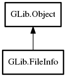

- FileInfo
- FileInfo
- clear_status
- copy_into
- dup
- get_attribute_as_string
- get_attribute_boolean
- get_attribute_byte_string
- get_attribute_data
- get_attribute_int32
- get_attribute_int64
- get_attribute_object
- get_attribute_status
- get_attribute_string
- get_attribute_stringv
- get_attribute_type
- get_attribute_uint32
- get_attribute_uint64
- get_content_type
- get_deletion_date
- get_display_name
- get_edit_name
- get_etag
- get_file_type
- get_icon
- get_is_backup
- get_is_hidden
- get_is_symlink
- get_modification_time
- get_name
- get_size
- get_sort_order
- get_symbolic_icon
- get_symlink_target
- has_attribute
- has_namespace
- list_attributes
- remove_attribute
- set_attribute
- set_attribute_boolean
- set_attribute_byte_string
- set_attribute_int32
- set_attribute_int64
- set_attribute_mask
- set_attribute_object
- set_attribute_status
- set_attribute_string
- set_attribute_stringv
- set_attribute_uint32
- set_attribute_uint64
- set_content_type
- set_display_name
- set_edit_name
- set_file_type
- set_icon
- set_is_hidden
- set_is_symlink
- set_modification_time
- set_name
- set_size
- set_sort_order
- set_symbolic_icon
- set_symlink_target
- unset_attribute_mask
FileInfo
Object Hierarchy:
Description:
Functionality for manipulating basic metadata for files.
FileInfo implements methods for getting information that all files should contain, and allows for manipulation of extended attributes.
See GFileAttribute for more information on how GIO handles file attributes.
To obtain a FileInfo for a File, use query_info (or its async variant). To obtain a FileInfo for a file input or output stream, use query_info or query_info (or their async variants).
To change the actual attributes of a file, you should then set the attribute in the FileInfo and call set_attributes_from_info or set_attributes_async on a GFile.
However, not all attributes can be changed in the file. For instance, the actual size of a file cannot be changed via set_size. You may call query_settable_attributes and query_writable_namespaces to discover the settable attributes of a particular file at runtime.
FileAttributeMatcher allows for searching through a FileInfo for attributes.
Namespace: GLib
Package: gio-2.0
Content:
Creation methods:
- public FileInfo ()
Creates a new file info structure.
Methods:
- public void clear_status ()
Clears the status information from this .
- public void copy_into (FileInfo dest_info)
Copies all of the GFileAttribute from this to
dest_info. - public FileInfo dup ()
Duplicates a file info structure.
- public string get_attribute_as_string (string attribute)
Gets the value of a attribute, formated as a string.
- public bool get_attribute_boolean (string attribute)
Gets the value of a boolean attribute.
- public unowned string get_attribute_byte_string (string attribute)
Gets the value of a byte string attribute.
- public bool get_attribute_data (string attribute, out FileAttributeType type, out void* value_pp, out FileAttributeStatus status)
Gets the attribute type, value and status for an attribute key.
- public int32 get_attribute_int32 (string attribute)
Gets a signed 32-bit integer contained within the attribute.
- public int64 get_attribute_int64 (string attribute)
Gets a signed 64-bit integer contained within the attribute.
- public weak Object get_attribute_object (string attribute)
Gets the value of a Object attribute.
- public FileAttributeStatus get_attribute_status (string attribute)
Gets the attribute status for an attribute key.
- public unowned string get_attribute_string (string attribute)
Gets the value of a string attribute.
- public unowned string[] get_attribute_stringv (string attribute)
Gets the value of a stringv attribute.
- public FileAttributeType get_attribute_type (string attribute)
Gets the attribute type for an attribute key.
- public uint32 get_attribute_uint32 (string attribute)
Gets an unsigned 32-bit integer contained within the attribute.
- public uint64 get_attribute_uint64 (string attribute)
Gets a unsigned 64-bit integer contained within the attribute.
- public unowned string get_content_type ()
Gets the file's content type.
- public DateTime get_deletion_date ()
Returns the DateTime representing the deletion date of the file, as available in G_FILE_ATTRIBUTE_TRASH_DELETION_DATE.
- public unowned string get_display_name ()
Gets a display name for a file.
- public unowned string get_edit_name ()
Gets the edit name for a file.
- public unowned string get_etag ()
Gets the entity tag for a given FileInfo .
- public FileType get_file_type ()
Gets a file's type (whether it is a regular file, symlink, etc).
- public weak Icon get_icon ()
Gets the icon for a file.
- public bool get_is_backup ()
Checks if a file is a backup file.
- public bool get_is_hidden ()
Checks if a file is hidden.
- public bool get_is_symlink ()
Checks if a file is a symlink.
- public TimeVal get_modification_time ()
Gets the modification time of the current this and sets it in
result. - public unowned string get_name ()
Gets the name for a file.
- public int64 get_size ()
Gets the file's size.
- public int32 get_sort_order ()
Gets the value of the sort_order attribute from the FileInfo.
- public weak Icon get_symbolic_icon ()
Gets the symbolic icon for a file.
- public unowned string get_symlink_target ()
Gets the symlink target for a given FileInfo .
- public bool has_attribute (string attribute)
Checks if a file info structure has an attribute named
attribute. - public bool has_namespace (string name_space)
Checks if a file info structure has an attribute in the specified
name_space. - public string[]? list_attributes (string name_space)
Lists the file info structure's attributes.
- public void remove_attribute (string attribute)
Removes all cases of
attributefrom this if it exists. - public void set_attribute (string attribute, FileAttributeType type, void* value_p)
Sets the
attributeto contain the given value, if possible. - public void set_attribute_boolean (string attribute, bool attr_value)
Sets the
attributeto contain the givenattr_value, if possible. - public void set_attribute_byte_string (string attribute, string attr_value)
Sets the
attributeto contain the givenattr_value, if possible. - public void set_attribute_int32 (string attribute, int32 attr_value)
Sets the
attributeto contain the givenattr_value, if possible. - public void set_attribute_int64 (string attribute, int64 attr_value)
Sets the
attributeto contain the givenattr_value, if possible. - public void set_attribute_mask (FileAttributeMatcher mask)
Sets
maskon this to match specific attribute types. - public void set_attribute_object (string attribute, Object attr_value)
Sets the
attributeto contain the givenattr_value, if possible. - public bool set_attribute_status (string attribute, FileAttributeStatus status)
Sets the attribute status for an attribute key.
- public void set_attribute_string (string attribute, string attr_value)
Sets the
attributeto contain the givenattr_value, if possible. - public void set_attribute_stringv (string attribute, string[] attr_value)
Sets the
attributeto contain the givenattr_value, if possible. - public void set_attribute_uint32 (string attribute, uint32 attr_value)
Sets the
attributeto contain the givenattr_value, if possible. - public void set_attribute_uint64 (string attribute, uint64 attr_value)
Sets the
attributeto contain the givenattr_value, if possible. - public void set_content_type (string content_type)
Sets the content type attribute for a given FileInfo.
- public void set_display_name (string display_name)
Sets the display name for the current FileInfo .
- public void set_edit_name (string edit_name)
Sets the edit name for the current file.
- public void set_file_type (FileType type)
Sets the file type in a FileInfo to
type. - public void set_icon (Icon icon)
Sets the icon for a given FileInfo.
- public void set_is_hidden (bool is_hidden)
Sets the "is_hidden" attribute in a FileInfo according to
is_hidden. - public void set_is_symlink (bool is_symlink)
Sets the "is_symlink" attribute in a FileInfo according to
is_symlink. - public void set_modification_time (TimeVal mtime)
Sets the g_file_attribute_time_modified attribute in the file info to the given time value.
- public void set_name (string name)
Sets the name attribute for the current FileInfo .
- public void set_size (int64 size)
Sets the g_file_attribute_standard_size attribute in the file info to the given size.
- public void set_sort_order (int32 sort_order)
Sets the sort order attribute in the file info structure.
- public void set_symbolic_icon (Icon icon)
Sets the symbolic icon for a given FileInfo .
- public void set_symlink_target (string symlink_target)
Sets the g_file_attribute_standard_symlink_target attribute in the file info to the given symlink target.
- public void unset_attribute_mask ()
Unsets a mask set by set_attribute_mask, if one is set.
Inherited Members:
All known members inherited from class GLib.Object